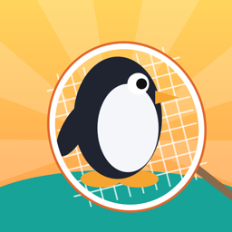

Zoo Loose: Keeper Chase
The animals are out! Chase them through six zoo habitats and net them before sunset.
Support
Found a bug or have an idea? Email cpdigicomm@gmail.com and include your iPhone model and iOS version.
How to play
Tap to jump: every tap gives the same jump, and the token arcs show exactly where it lands. Swipe down to slide under things. Jump at a rope to swing over big ponds. When the animal is close and TAP TO NET! appears, tap to catch it.
Prefer buttons? Turn on Button controls in Settings for big JUMP and SLIDE buttons.
FAQ
Does it need internet?
No. The whole game plays offline. Ads only load when you happen to be online.
How do I open new habitats?
Return 3 animals in a habitat to open the next one.
How do I earn 3 stars?
Catch the animal, don't fall in any water, and finish with plenty of daylight left.
What is Second Wind?
If a chase ends, Second Wind puts you back in with a heart and extra time. You get two free; after that, it's an optional short video.
Will I lose progress if I delete the app?
Yes. Progress is stored only on your device.